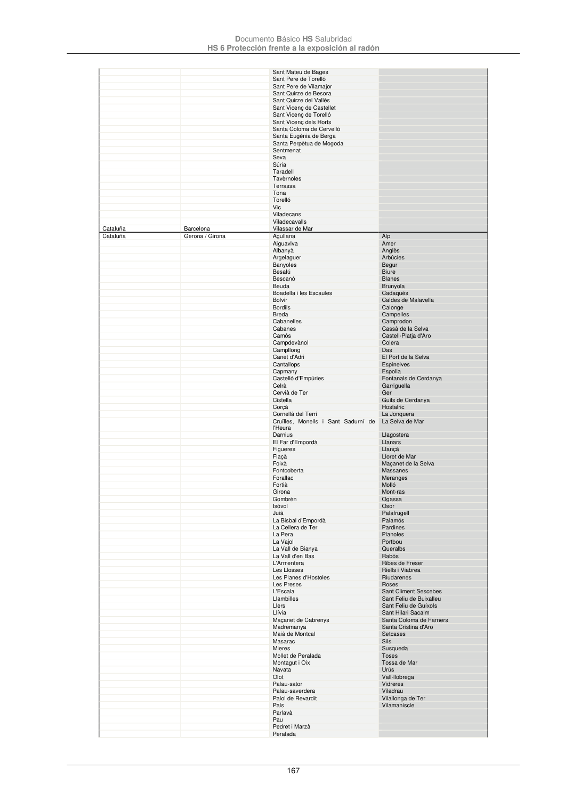

DB-HS Salubridad · edición 2022-06-14 · capa oficial
Documento DB-HS-oficial · SHA-256 del PDF 68df3caacc95f71aee2ec1ba7b2c65ae66155c21e3a8785521b8fdd4fd640d3b
Página física 167 de 184.
Copia fiel del PDF fuente · Fuente oficial
Ficha de la disposición en la fuente oficial
Formato: Texto de la página (Markdown)
Documento Básico HS Salubridad HS 6 Protección frente a la exposición al radón 167 Sant Mateu de Bages Sant Pere de Torelló Sant Pere de Vilamajor Sant Quirze de Besora Sant Quirze del Vallès Sant Vicenç de Castellet Sant Vicenç de Torelló Sant Vicenç dels Horts Santa Coloma de Cervelló Santa Eugènia de Berga Santa Perpètua de Mogoda Sentmenat Seva Súria Taradell Tavèrnoles Terrassa Tona Torelló Vic Viladecans Viladecavalls Cataluña Barcelona Vilassar de Mar Cataluña Gerona / Girona Agullana Alp Aiguaviva Amer Albanyà Anglès Argelaguer Arbúcies Banyoles Begur Besalú Biure Bescanó Blanes Beuda Brunyola Boadella i les Escaules Cadaqués Bolvir Caldes de Malavella Bordils Calonge Breda Campelles Cabanelles Camprodon Cabanes Cassà de la Selva Camós Castell-Platja d'Aro Campdevànol Colera Campllong Das Canet d'Adri El Port de la Selva Cantallops Espinelves Capmany Espolla Castelló d'Empúries Fontanals de Cerdanya Celrà Garriguella Cervià de Ter Ger Cistella Guils de Cerdanya Corçà Hostalric Cornellà del Terri La Jonquera Cruïlles, Monells i Sant Sadurní de l'Heura La Selva de Mar Darnius Llagostera El Far d'Empordà Llanars Figueres Llançà Flaçà Lloret de Mar Foixà Maçanet de la Selva Fontcoberta Massanes Forallac Meranges Fortià Molló Girona Mont-ras Gombrèn Ogassa Isòvol Osor Juià Palafrugell La Bisbal d'Empordà Palamós La Cellera de Ter Pardines La Pera Planoles La Vajol Portbou La Vall de Bianya Queralbs La Vall d'en Bas Rabós L'Armentera Ribes de Freser Les Llosses Riells i Viabrea Les Planes d'Hostoles Riudarenes Les Preses Roses L'Escala Sant Climent Sescebes Llambilles Sant Feliu de Buixalleu Llers Sant Feliu de Guíxols Llívia Sant Hilari Sacalm Maçanet de Cabrenys Santa Coloma de Farners Madremanya Santa Cristina d'Aro Maià de Montcal Setcases Masarac Sils Mieres Susqueda Mollet de Peralada Toses Montagut i Oix Tossa de Mar Navata Urús Olot Vall-llobrega Palau-sator Vidreres Palau-saverdera Viladrau Palol de Revardit Vilallonga de Ter Pals Vilamaniscle Parlavà Pau Pedret i Marzà Peralada

Datos candidatos: compruebe celdas y notas en el PDF.